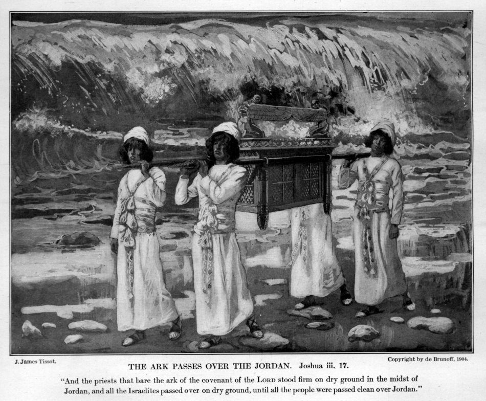

Joshua 4 — The Mister Translation

Tissot’s plate carries its own caption, and it points at the last verse of the previous chapter — the priests ‘stood firm on dry ground in the midst of Jordan’ — which is exactly where chapter 4 keeps them until v10: standing in the riverbed with the water standing behind them, while the people hurry past and twelve men go back for stones. There are no stones in the picture and no Joshua; the three priests have their eyes on the bank. The wall of water Tissot paints is a breaking wave a few yards behind them, where the text puts it ‘very far away, at Adam’ (3:16) — the painter’s compression, not the narrator’s. This is the black-and-white plate from the Paris edition of Tissot’s Old Testament, published in 1904, two years after his death; the original gouache belongs to the series most of which is now in the Jewish Museum, New York.
{kind=link}
★★★ The chapter opens by saying again what the last chapter ended on, and then the scribes leave a gap in the middle of the sentence. Tammu kol-ha-goy, ‘all the nation had finished,’ stands in three verses of the Hebrew Bible, and all three are this book’s: Joshua 3:17 (already on these pages), where the priests stand in the riverbed until all the nation had finished crossing; this verse, which picks the clause up word for word to resume the story; and Joshua 5:8 (now on these pages), where the same words are said of a nation that had finished being circumcised. Resuming a narrative by repeating its last clause is a habit of Hebrew storytelling, and it is the first sign that this chapter tells some things twice. ⚠ Then, between the Jordan and and Jehovah said, the Masoretic text sets an open paragraph break, {פ}, inside the verse — a pisqa be’emtsa pasuq, one of a small number of such mid-verse breaks in the Hebrew Bible; the best known is Genesis 35:22 (already on these pages), where the scribes drew the same veil across Reuben and Bilhah. Here the break falls between the crossing completed and the command that follows it, and this translation prints it where it stands, as the Genesis 35 page did not. KJV reads ‘when all the people were clean passed over Jordan’, with people for the Hebrew’s nation; ASV ‘when all the nation were clean passed over’; NWT 1984 ‘as soon as the whole nation had completed passing over’; NIV ‘When the whole nation had finished crossing’; the Geneva 1599 ‘when all the people were wholly gone over Jordan’, and it brackets vv1–3 as a parenthesis (‘after the Lord had spoken unto Joshua, saying’), taking the whole command as a flashback; the Douay-Rheims ‘And when they were passed over’. All thirteen versions on the two shelves run the verse on without the break.
★★ ‘Take for yourselves twelve men’ is 3:12 again, and now the twelve are told what for. The last chapter chose them and gave them nothing to do; Rashi’s gloss on this verse is ‘these were the men mentioned previously, who were told to be prepared.’ The wording shifts slightly — shnei asar ish mi-shivtei Yisrael there, shneim asar anashim min-ha-am here, and la-shavet, ‘for the tribe,’ becomes mi-shavet, ‘from the tribe’ — but the doubled distributive ish-echad ish-echad, ‘one man, one man,’ is the same in both, and this translation keeps it doubled as the Numbers 34:18 and Joshua 3 pages do. Hebrew counts men and stones with different forms of twelve, masculine shneim asar for the men (vv2, 4) and feminine shteim esreh for the stones (vv3, 8, 9, 20); English cannot show it. KJV, ASV and Geneva 1599 read ‘out of every tribe a man’; NWT 1984 ‘one man from each tribe’; NIV ‘Choose twelve men from among the people, one from each tribe’; the Douay-Rheims ‘Choose twelve men, one of every tribe’; the Living Bible runs vv2–3 together into one sentence, ‘Tell the twelve men chosen for a special task’, and prints it twice, once under each verse number.
★★★ ‘From the standing-place of the priests’ feet’ — and everywhere else in the Bible a matsav is an enemy garrison. Read as this noun, matsav stands in ten verses of the Hebrew Bible (the consonants also spell matsevah, a standing stone, and more, so the count is by reading). The phrase matsav raglei, ‘the standing-place of the feet of,’ stands in two verses of the Hebrew Bible, v3 and v9 of this chapter; the other eight are the Philistines’ outpost that Jonathan climbs up to at Michmash (1 Samuel 13:23; 14:1, 4, 6, 11, 15), the Philistine garrison at Bethlehem (2 Samuel 23:14), and the station Shebna is thrust from (Isaiah 22:19; none yet on these pages). A matsav is a post that is held. The priests’ feet are holding one in the middle of a river, and the stones are to come from under them. Hakhin, ‘set firm,’ is 3:17’s word again, and it is placed where it can belong to the feet or to the stones: KJV and ASV give it to the feet, ‘where the priests’ feet stood firm’, as does NWT 1984, ‘stood motionless’; the Greek Bible gives it to the stones, hetoimous dōdeka lithous, ‘twelve READY stones’; and Jerome’s Latin made them durissimos, so the Douay-Rheims reads ‘twelve very hard stones’, a hardness the Hebrew does not mention. The Geneva 1599 has the priests ‘stood in a readiness’; NIV drops the word, ‘from right where the priests are standing’. This translation sets it off with commas and lets the reader hear it either way. The malon, the lodging-place, stands in eight verses of the Hebrew Bible, and the Torah’s three are all on these pages: Joseph’s brothers open a sack at one and find their silver (Genesis 42:27; 43:21), and at one, on the way down to Egypt, Jehovah met him and sought to put him to death (Exodus 4:24). The lodging-place where God once came for Moses is the word for where the stones are to be set down. KJV reads ‘the lodging place, where ye shall lodge this night’, ASV ‘the lodging-place’, NWT 1984 ‘the lodging place in which you will lodge tonight’; NIV ‘the place where you stay tonight’; the Douay-Rheims ‘the place of the camp, where you shall pitch your tents’; the Living Bible ‘pile them up as a monument at the place where you camp tonight’. A closed break, {ס}, ends the command.
★★ ‘The twelve men’ — with the article inside the number — whom Joshua ‘had made ready’, in the verb the stones and the feet share. Shneim he-asar, ‘the twelve,’ with the article on the second half of the numeral, stands in two verses of the Hebrew Bible: this one, and 1 Kings 19:19 (not yet on these pages), where Elijah finds Elisha ploughing with twelve yoke of oxen, ‘he with the twelfth.’ Asher hekhin, ‘whom he had made ready,’ is the causative of the root that gave v3 its hakhin, the feet (or the stones) set firm: the men were readied as the ground was. The Greek Bible read something else here, dōdeka andras tōn endoxōn, ‘twelve men of the notable ones.’ KJV, ASV and Geneva 1599 read ‘whom he had prepared’; NWT 1984 and NIV ‘appointed’; the Douay-Rheims ‘chosen’; the Living Bible ‘summoned the twelve men’ and drops the clause.
★★★ ‘One stone on his shoulder’ — and shekhem, the shoulder, is the name of the town where the law will one day be written on stones. Al-shikhmo, ‘on his shoulder,’ stands in five verses of the Hebrew Bible: this one; Abimelech with a cut bough on his shoulder at Judges 9:48; and three in Isaiah, the government on his shoulder (9:5, English 9:6), the burden lifted from it (14:25), and the key of the house of David laid on Eliakim’s (22:22; none yet on these pages). The noun is shekhem, and it is the town of Shechem written with the same letters, the ‘shoulder’ of land between Ebal and Gerizim where Deuteronomy 27:4 (already on these pages) has the great stones set up and written on. Even achat, ‘one stone,’ stands in five verses of the Hebrew Bible, and two are already on these pages: Zechariah 3:9, the one stone with seven eyes set before another Joshua, the high priest, and this verse. The others are Abimelech’s seventy brothers killed on one stone (Judges 9:5, 18) and Samuel’s one stone set up between Mizpah and Shen and named Ebenezer, ‘stone of help’ (1 Samuel 7:12; none yet on these pages) — a memorial stone with a sentence attached, like these. The rabbis weighed the stones: the Talmud (Sotah 34a) puts each at about forty se’ah, arguing from the one grape cluster the spies carried on a pole between two (Numbers 13:23, already on these pages) that what a man lifts onto his own shoulder is a third of what two can carry between them. It is a reading, reported here as one. Le-mispar shivtei, ‘according to the number of the tribes of,’ is this chapter’s phrase (vv5, 8), and Elijah will use nearly the same words for twelve stones, according to the number of the tribes of the sons of Jacob, when he builds his altar on Carmel (1 Kings 18:31, not yet on these pages); Moses had set up twelve pillars for the twelve tribes of Israel under Sinai (Exodus 24:4, already on these pages). ⚠ The Greek Bible has no ark in v5: prosagagete emprosthen mou pro prosōpou Kyriou, ‘go on before me, before the face of the Lord.’ KJV reads ‘take ye up every man of you a stone upon his shoulder’, ASV ‘take you up every man of you a stone upon his shoulder’; NWT 1984 ‘lift up for yourselves each one a stone upon his shoulder’; NIV ‘Each of you is to take up a stone on his shoulder’; the Douay-Rheims ‘carry from thence every man a stone on your shoulders’, and the Living Bible adds ‘twelve stones in all, one for each of the twelve tribes’.
★★★ ‘When your sons ask tomorrow’ is the Torah’s catechism formula, and the question has the exact shape of the Passover night’s. Ki-yish’alkha binkha, ‘when your son asks you,’ stands in two verses of the Hebrew Bible, Exodus 13:14 and Deuteronomy 6:20 (both already on these pages), and both add machar, ‘tomorrow,’ Hebrew’s word for any later day; the plural, yish’alun beneikhem, stands in two verses of the Hebrew Bible, v6 and v21 of this chapter. And the question the sons ask here, mah ha-avanim ha-eleh lakhem, ‘what are these stones TO YOU,’ is built like the one Exodus expects on Passover night: mah ha-avodah ha-zot lakhem, ‘what is this service to you’ (Exodus 12:26, already on these pages). Those four Torah passages about a son and his father — Exodus 12:26, 13:8, 13:14 and Deuteronomy 6:20 — are the ones the rabbis later built the Passover Haggadah’s four sons from; Joshua adds two more questions, and a chapter dated to the week of Passover (v19) gives its stones the Passover’s own catechism. This translation keeps tomorrow, as the Deuteronomy 6 page does, where the Exodus 13 page reads ‘in time to come’; the Douay-Rheims alone on the English shelf prints it literally, ‘when your children shall ask you to morrow’. ASV reads ‘when your children ask in time to come, saying, What mean ye by these stones?’; NWT 1984 ‘In case YOUR sons should ask in time to come’ and then ‘Why do you have these stones?’; NIV ‘In the future, when your children ask you’ and ‘What do these stones mean?’. ⚠ Four of the thirteen versions bring v21’s their fathers up into v6, where the Hebrew does not have it: KJV ‘when your children ask their fathers in time to come’, the Geneva 1599 ‘when your children shall ask their fathers’, and in Spanish the RV60 «cuando vuestros hijos preguntaren a sus padres mañana» and the RV 1909 the same with its old accent, «á sus padres» — the Reina-Valera keeping mañana where the KJV lost it. The TNM 1987 makes the son singular, «¿Por qué tienes estas piedras?», and the Living Bible rewrites the whole exchange around a ‘monument’. Ot be-qirbekhem, ‘a sign in your midst,’ stands in one verse of the Hebrew Bible; the ot here is the covenant-marker kind, a thing that stands and is asked about, not a wonder.
★★★ ‘A memorial for the sons of Israel for ever’ — the last stones called a zikkaron for the sons of Israel were the two on the high priest’s shoulders, with the twelve tribes’ names cut into them. Exodus 28:12 (already on these pages): you shall put the two stones on the shoulder-pieces of the ephod, stones of remembrance for the sons of Israel; and Aaron shall bear their names before Jehovah on his two shoulders, for a remembrance — six names on each stone. Here twelve stones, one per tribe, are carried on twelve shoulders (a different Hebrew word for shoulder, shekhem against Exodus’s katef) and set down as a memorial for the sons of Israel, and the Exodus pages print the same noun as ‘remembrance’ there and ‘memorial’ at 12:14, where the noun is first used and the thing remembered is the Passover: this day shall be for you a memorial. Le-zikkaron, ‘for a memorial,’ stands in six verses of the Hebrew Bible — that one, Exodus 13:9, 30:16, Numbers 10:10 (all already on these pages), this verse and Zechariah 6:14 (not yet on these pages). Nikhretu, ‘were cut off,’ twice in the verse, is 3:13’s covenant verb karat, and the answer the fathers are to give says it twice, as the cutting itself was said twice, predicted at 3:13 and reported at 3:16. KJV and ASV read ‘these stones shall be for a memorial unto the children of Israel for ever’; NWT 1984 ‘must serve as a memorial to the sons of Israel to time indefinite’; NIV ‘are to be a memorial to the people of Israel forever’; the Douay-Rheims ‘set for a monument’; the Living Bible ‘a permanent reminder’. In Spanish the RV 1909 reads «por memoria», the TNM 1987 «de memoria», the RV60 «monumento conmemorativo», the NVI «un recuerdo permanente». ⚠ The Greek Bible gives the ark its full title from the last chapter, ‘the ark of the covenant of the Lord of the whole earth’, which the Hebrew of this verse does not.
★★ The order is carried out ‘as Jehovah had spoken to Joshua’ — and the reader never heard Jehovah say it. Verses 2–3 give the command in Jehovah’s mouth as far as the lodging-place; the stone on the shoulder, the number of the tribes, the sign and the sons’ question are all Joshua’s words (vv5–7). Verse 8 credits the whole of it to Jehovah. The narrator’s way with a relayed command is to give it once and credit it to its source; 3:7–8 gave the priests’ standing order in Jehovah’s mouth and never showed Joshua passing it on. Spelled this way, shteim esreh avanim, ‘twelve stones,’ stands in three verses of the Hebrew Bible — v3, v9 and Elijah’s altar at 1 Kings 18:31; v8 writes the numeral in its other form, shtei-esreh, and v20 adds the article. Rashi, following the Talmud (Sotah 36a), has the stones go much further than the lodging-place: ‘On that same day they came to Mt. Eivel and built with them the Altar … They then scraped the stones, and came and lodged in Gilgal’ — a harmonisation with Deuteronomy 27:2 (already on these pages), which said the lime-coated stones were to be set up on the day that you cross the Jordan, and with Joshua 8:30–32 (now on these pages), which sets them up on Ebal, above Shechem, some forty-five kilometres north-west of Gilgal as the crow flies — the Talmud (Sotah 36a) puts the two mountains ‘more than sixty mil from the river’ and has them reached the same day. The plain text has the stones carried to where the people slept that night, and this page reports the rabbis’ day-trip as theirs. KJV reads ‘carried them over with them unto the place where they lodged, and laid them down there’; NWT 1984 ‘went taking them over with them to the lodging place and depositing them there’; NIV ‘carried them over with them to their camp, where they put them down’; the Living Bible ‘constructed a monument there’.
★★★ ‘And twelve stones Joshua set up in the midst of the Jordan’ — the Hebrew says neither other nor the, and every reader since has had to choose. Read plainly, v9 is a second set: twelve stones raised in the riverbed, under the priests’ feet, while the first twelve go to the camp. The Greek Bible makes that explicit, allous dōdeka lithous, ‘OTHER twelve stones’; Jerome’s Latin followed it, alios quoque duodecim lapides, so the Douay-Rheims reads ‘Josue put other twelve stones in the midst of the channel of the Jordan’; Rashi says the same, ‘these were different stones that Yehoshua set up in the midst of the Jordan’; and the Talmud (Sotah 35b) counts three sets of stones in all — Moses’ in Moab, Joshua’s in the Jordan, Joshua’s at Gilgal. The Living Bible reads ‘Joshua also built another monument of twelve stones in the middle of the river’, and the NWT 1984 ‘There were also twelve stones that Joshua set up in the middle of the Jordan’. ⚠ The NIV goes the other way and makes them ONE set: ‘Joshua set up the twelve stones that had been in the middle of the Jordan at the spot where the priests … had stood’ — which reads v9 as an anticipation of v20 and leaves nothing in the river. KJV and the Geneva 1599 read ‘And Joshua set up twelve stones in the midst of Jordan’, ASV ‘in the midst of the Jordan’, all as open as the Hebrew; in Spanish the RV60 «Josué también levantó doce piedras en medio del Jordán» and the NVI «Además, Josué colocó doce piedras en el cauce del río» both read two sets. Calvin, who reads two, asks the obvious question and answers it: ‘Apparently there was no use of stones under the water, and it may therefore seem to have been absurd to bury stones at a depth … It might also happen, that when the river was low, the tops of the heap would sometimes appear.’ Josephus has no stones in the river at all; he has Joshua build an altar of the twelve at the camp ‘and upon it offered sacrifice to God’ (Antiquities 5.1.4), which the text does not say. This translation keeps the Hebrew’s word order, twelve stones first and no article, so that the question stays where the text leaves it. Heqim, ‘set up,’ is the verb of Deuteronomy 27:2’s you shall set up for yourself great stones.
★★ ‘And they are there until this day’ — the narrator’s clock, and the first of many in this book. Ad ha-yom ha-zeh stands in eighty-three verses of the Hebrew Bible. It stands in fifteen verses of this book, of which this is the first: the stones (4:9), the name Gilgal (5:9), Rahab living in Israel (6:25, already on these pages), Achan’s cairn, the ruin of Ai, the Gibeonites’ woodcutting, Caleb’s Hebron, the Jebusites in Jerusalem and the rest. The phrase means that whoever wrote the sentence could still point at the thing — and, for stones under a river in flood, that they were pointed at when the river was low, which is Calvin’s guess too. KJV and ASV read ‘and they are there unto this day’; NWT 1984 ‘they continue there until this day’; NIV ‘And they are there to this day’; the Geneva 1599 ‘there have they continued unto this day’; the Douay-Rheims ‘they are there until this present day’.
★★ What did Moses command Joshua about a river? Nothing, in so many words: Deuteronomy 31:7–8 and 3:28 (already on these pages) charge him to be strong and to go over at the head of the people, and Deuteronomy 27:2–4 tells the nation what to do with stones on the day it crosses — which is how Rashi and the Talmud read this verse, and why they send the stones to Ebal. Calvin reads it the other way: ‘the command of Moses here mentioned was general, but God gave special injunctions to Joshua as each circumstance arose.’ ⚠ The Greek Bible has no Moses in the verse at all — the priests stood heōs hou synetelesen Iēsous panta ha eneteilato Kyrios anangeilai tō laō, ‘until Joshua had finished all that the Lord commanded him to announce to the people,’ and the sentence ends there. Whether the Hebrew added the clause or the Greek dropped it, the text cannot say. Ad tom kol-ha-davar, ‘until everything was finished,’ is tamam again, the verb of 3:16–17 and of v1, and v11 will use it once more: the water finishes, the nation finishes, the business finishes, the people finish. Rashi, from Sotah 34a, fills the priests’ standing time with a speech: ‘While they were standing in the Jordan, Yehoshua said to them, “You must know the purpose for which you are crossing the Jordan. It is on the condition that you drive away all the inhabitants of the land”’ — the Talmud’s way of giving everything Jehovah commanded Joshua to speak to the people a content. Vaymaharu, ‘and the people hurried’: Calvin’s comment is on the men who did not, ‘the priests … are justly praised for their patience in calmly remaining alone at their post, while the whole people were swiftly hurrying on to the further bank.’ KJV and ASV read ‘the people hasted and passed over’; NWT 1984 ‘All the while the people hurried up and passed over’; NIV ‘The people hurried over’; the Douay-Rheims ‘the people made haste and passed over’; the Living Bible ‘the people had hurried across the riverbed’.
★★★ ‘The ark of Jehovah crossed over, and the priests, before the people’ — and this is the first of two times the chapter brings the ark out of the river. Verse 11 has the ark and its carriers cross once the people are over; vv15–18 have Jehovah command the priests up out of the Jordan, and the water return as their soles leave it. Read straight through, the ark leaves the river twice. Readings differ, and this page shows the seam rather than sanding it: some take vv15–18 as the narrator doubling back to tell the priests’ exit in detail, which is Calvin’s view of the whole chapter (‘what is interposed should be interpreted as in the pluperfect tense’) and the reason the Geneva Bible brackets vv1–3 as a flashback (see the note on v1); others see two accounts of one crossing laid side by side. Rashi’s solution is the boldest: the priests stepped back to the EAST bank when the people were over, the water returned, and then ‘the Ark lifted its carriers and crossed over’ on its own — which, he adds, is why Uzzah was punished for steadying it, ‘for if the Ark carried its carriers, it certainly was able to carry itself.’ Lifnei ha-am can mean ahead of the people or in front of them, in their sight; since the people are already across, the second is likelier, and Rashi glosses it ‘before the eyes of the people.’ ASV reads ‘the ark of Jehovah passed over, and the priests, in the presence of the people’, and KJV the same with its ‘in the presence of the people’; NWT 1984 ‘the ark of Jehovah passed over, and the priests, before the people’; NIV ‘came to the other side while the people watched’; the Living Bible ‘the people watched the priests carry the Ark up out of the riverbed’. ⚠ The Greek Bible reads kai hoi lithoi emprosthen autōn, ‘and the STONES before them’ — stones where the Hebrew has priests. The two Hebrew words share only their article and plural ending, so a slip of the eye is unlikely; more probably it is the Greek making v11 answer v8, the stones going ahead into the camp. The Douay-Rheims did not follow it, ‘the ark also of the Lord passed over, and the priests went before the people’.
★★★ Chamushim is the word Israel left Egypt with, and before Jehovah, to the war is the Gadites’ own promise, quoted back. Read as this word, chamushim stands in four verses of the Hebrew Bible — the consonants also spell fifty, more than a hundred times, so the count is by reading: Exodus 13:18, the sons of Israel went up in battle order out of the land of Egypt; Joshua 1:14, Joshua’s charge to these same tribes, you yourselves shall cross over armed, ahead of your brothers (both already on these pages); this verse, where they do; and Judges 7:11 (not yet on these pages), Gideon at the edge of the Midianite camp. What the word means is genuinely uncertain — armed, in ranks, or in fives — and the Exodus and Joshua 1 pages chose different English for it; this page follows Exodus, since the nation is walking out of a body of water in the same formation it walked out of Egypt in. Lifnei Yehovah la-milchamah, ‘before Jehovah, to the war,’ stands in three verses of the Hebrew Bible: Numbers 32:20, Moses’ condition to Reuben and Gad, if you will arm yourselves before Jehovah for the war; 32:27, their answer, your servants — every man armed for war — will cross over before Jehovah, to the war (both already on these pages); and this verse, where the narrator reports the crossing in the words of the oath. Chalutsei ha-tsava is the Numbers 32 word for a man stripped for battle. ⚠ The Targum will not have an army pass before Jehovah: it reads ‘before the PEOPLE of the Lord.’ KJV reads ‘passed over armed before the children of Israel’ and ‘About forty thousand prepared for war’; ASV ‘about forty thousand ready armed for war passed over before Jehovah unto battle’; NWT 1984 ‘in battle formation … About forty thousand equipped for the army passed over before Jehovah for the war’; NIV ‘ready for battle … armed for battle’; the Douay-Rheims ‘forty thousand fighting men by their troops, and bands, marched through the plains and fields of the city of Jericho’, with no before the Lord; the Living Bible folds vv12–13 into one sentence and, like the Douay, has them ‘led the other tribes … across’.
★★ Forty thousand is about a third of what the two and a half tribes could field, and the text does not say who chose the third. The census of Numbers 26 (already on these pages) counted Reuben at 43,730 fighting men, Gad at 40,500 and all Manasseh at 52,700 — roughly 110,000 for two tribes and half of the third. So about a third crossed, and about two thirds stayed east of the river with the wives, children and cattle that Numbers 32:17 had put into fortified cities. Calvin’s arithmetic is the same (‘a third, or about a third of the number ascertained by the census’), and his conclusion is that Moses never meant every man to go: ‘it would have been harsh and cruel to leave an unwarlike multitude unprotected in the midst of many hostile nations.’ The text records the number and no complaint. Arvot Yericho, ‘the plains of Jericho,’ stands in five verses of the Hebrew Bible in three spellings: this verse and 5:10, the Passover at Gilgal; and 2 Kings 25:5, Jeremiah 39:5 and 52:8 (none yet on these pages), where the Chaldeans overtake Zedekiah, the last king of Judah, in the plains of Jericho as he runs from Jerusalem. The name answers arvot Moav, the plains of Moab, where the camp had stood since Numbers 22:1: the nation moves from one flat by the river to the other, and the place where it first camps in the land is where its last king is caught leaving it. The Masoretic text closes the verse with {ס}. KJV and ASV read ‘the plains of Jericho’, NWT 1984 ‘the desert plains of’ Jericho, the Geneva 1599 ‘the plain of Jericho’, singular; the Greek Bible reads ‘to the city of Jericho’.
★★★ ‘On that day Jehovah made Joshua great in the eyes of all Israel’ pays 3:7 — and ‘in the eyes of all Israel’ is the Torah’s last phrase, said of Moses, now said of Joshua. Ha-yom ha-zeh achel gaddelkha, ‘this day I will begin to make you great,’ was the promise; ba-yom ha-hu giddal, ‘on that day he made great,’ is the report, the same causative of gadol. With this preposition, be-einei kol-Yisrael, ‘in the eyes of all Israel,’ stands in two verses of the Hebrew Bible, 3:7 and this one; the phrase einei kol-Yisrael, with any preposition, stands in eight verses of the Hebrew Bible, and besides 3:7 and this verse, three more are on these pages already: Deuteronomy 31:7, where Moses commissions Joshua in the sight of all Israel; Deuteronomy 34:12, the Torah’s closing verse, the great terror that Moses performed in the sight of all Israel — its last three words in Hebrew; and 1 Kings 1:20, the eyes of all Israel are on you. The first time the phrase recurs after the Torah ends on it, it is Joshua who stands in it. Read with a human object, giddal Yehovah, Jehovah ‘made great’ a man, stands in two verses of the Hebrew Bible: this one, and 1 Chronicles 29:25 (not yet on these pages), Jehovah made Solomon exceedingly great in the eyes of all Israel — the successor of Moses and the successor of David, the same sentence. Vayir’u oto ka’asher yar’u et-Mosheh, ‘they feared him as they had feared Moses’: the last time a body of water was parted, Exodus 14:31 (already on these pages) reported that the people feared Jehovah, and they believed in Jehovah and in Moses his servant; the Jordan produces the fear of Joshua. Calvin, who knows what Numbers says about the fear of Moses, limits the comparison to the end of his life, ‘when the turbulent parents were dead and a better race had succeeded.’ KJV, ASV and Geneva 1599 read ‘magnified Joshua in the sight of all Israel; and they feared him, as they feared Moses’; NWT 1984 ‘made Joshua great in the eyes of all Israel, and they began to fear him’; NIV ‘exalted Joshua … and they stood in awe of him’; the Douay-Rheims ‘magnified Josue … that they should fear him, as they had feared Moses, while he lived’; the Living Bible opens ‘It was a tremendous day for Joshua!’. In Spanish the RV 1909, RV60 and NVI read «engrandeció», the TNM 1987 «hizo grande»; the NVI softens the fear to «respetó». The Deuteronomy pages print ‘in the sight of all Israel’ for their preposition and this page keeps Joshua 3’s ‘in the eyes.’ An open break, {פ}, closes the verse.
★★★ The chapter calls the chest by six different names, and the sixth is the tabernacle’s. The ark of Jehovah your God (v5); the ark of the covenant of Jehovah (vv7, 18); the ark of the covenant (v9); the ark (v10); the ark of Jehovah (v11); and here, in Jehovah’s own mouth, aron ha-edut, ‘the ark of the testimony’ — the name Exodus gives it when it is being built and installed. Written three ways, the title stands in twelve verses of the Hebrew Bible, all in Exodus and Numbers but this one (Exodus 25:22, 40:3, Numbers 7:89 among them, all already on these pages). Spelled as it is here, it stands in one verse of this book. The edut is the testimony, the tablets, and the name puts the tablets back in the box at the moment it leaves the water. The Greek Bible conflates two titles, ‘the ark of the covenant of the testimony of the Lord.’ KJV, ASV, Geneva 1599 and NWT 1984 read ‘the ark of the testimony’; NIV ‘the ark of the covenant law’, its standing rendering of edut; the Douay-Rheims ‘the ark of the covenant’, the Latin having levelled it; the NVI paraphrases, «el arca que tiene las tablas del pacto»; the Living Bible drops the title and rewrites vv15–17 as one sentence, printed twice.
★★ Verse 18 opens on a ketiv/qere: the scroll writes ba’alot, ‘IN the coming up,’ and the Masoretes read ka’alot, ‘AS they came up.’ The two letters, bet and kaf, differ by a corner, and the sense barely moves — when against as. This translation follows the read form, as it has at every such reading on these pages, and records the written one here. The shelf shows no trace of it: KJV reads ‘were come up out of the midst of Jordan’, ASV ‘out of the midst of the Jordan’; NWT 1984 ‘when the priests … came up out of the middle of the Jordan’; the Douay-Rheims ‘when they that carried the ark … were come up’.
★★★ ‘The soles of the priests’ feet were pulled loose onto the dry land’ — nataq is the verb for snapping a cord, and for an army pulled away from its walls. The letters of nitqu stand in nine verses of the Hebrew Bible, every one of them this verb: Jeremiah’s all my cords are snapped (10:20) and Job’s my plans are broken off (17:11); the yoke to be broken at Isaiah 58:6; and, in this book, the men of Ai drawn away from the city by Joshua’s feigned retreat (8:16; none yet on these pages). A thing is nataq when it is torn loose from what held it. The Hebrew says the soles were pulled loose from the riverbed el he-charavah, ‘onto the dry land’ — the bare noun of 3:17’s be-charavah, the dry land the priests stood on in the middle of the river, now the dry land of the bank; and kappot raglei ha-kohanim, ‘the soles of the priests’ feet,’ is 3:13’s phrase, the soles that rested in the water and stopped it. The moment they leave it, it moves: vayashuvu mei-ha-Yarden limqomam, ‘the waters of the Jordan returned to their place.’ Limqomam, ‘to their place,’ stands in three verses of the Hebrew Bible, and the other two are armies going home (1 Samuel 14:46; 2 Chronicles 25:10, neither yet on these pages). The Red Sea’s return had a different word, the sea returned to its steady flow (Exodus 14:27, already on these pages). Ki-tmol shilshom, ‘as yesterday and the day before,’ spelled this way stands in three verses of the Hebrew Bible — Laban’s face ‘not toward him as before’ (Genesis 31:2, already on these pages), this verse, and 2 Kings 13:5 (not yet on these pages); 3:4 had the idiom with from, and both pages print ‘before.’ The Greek keeps it literal, katha chthes kai tritēn hēmeran, ‘as yesterday and the third day.’ And al-kol-gedotav, ‘over all its banks,’ is 3:15’s phrase paid: the river the narrator said was in flood when the feet went in is in flood again when they come out. KJV reads ‘the soles of the priests’ feet were lifted up unto the dry land, that the waters of Jordan returned unto their place, and flowed over all his banks, as they did before’; ASV ‘lifted up unto the dry ground … went over all its banks, as aforetime’; NWT 1984 ‘drawn out onto the dry ground … began returning to their place and went overflowing all its banks as formerly’; NIV ‘No sooner had they set their feet on the dry ground than the waters of the Jordan returned to their place and ran at flood stage as before’; the Geneva 1599 ‘as soon as the soles of the Priests’ feet were set on the dry land’; the Douay-Rheims ‘began to tread on the dry ground, the waters returned into the channel, and ran as they were wont before’; the Living Bible ‘the water poured down again as usual and overflowed the banks of the river as before!’. In Spanish the RV60 reads «estuvieron en lugar seco», the TNM 1987 «fueron sacadas al suelo seco», keeping the passive verb, and the NVI «Tan pronto como sus pies tocaron tierra firme».
★★★ ‘On the tenth of the first month’ is a date with a law attached. The phrase stands in one verse of the Hebrew Bible, but the day is Exodus 12:3’s (already on these pages): on the tenth of this month let them take for themselves, each man, a lamb — the month Exodus 12:2 had just made the first of the year. Israel comes up out of the Jordan on the day the Passover lamb is set aside, and Joshua 5:10 (now on these pages) keeps the Passover four days later on these same plains; Josephus adds that the manna, which they had eaten forty years, failed them there (Antiquities 5.1.4). The Living Bible turns the date into a Gregorian one, ‘This miracle occurred on the 25th of March’ — a day no text supplies. KJV and ASV read ‘on the tenth day of the first month’; NWT 1984 ‘on the tenth of the first month’; NIV ‘On the tenth day of the first month the people went up from the Jordan’; the Douay-Rheims ‘the tenth day of the first month’.
★★ Gilgal is named before it is explained, and the stones are set up a second time. The name is given its sense at 5:9 (now on these pages), where Jehovah rolls away the reproach of Egypt; here the narrator uses it as the place already had it — ‘by anticipation,’ as Calvin says, ‘for this new name was afterwards given to it by Joshua.’ Deuteronomy 11:30 (already on these pages) had used the name once already, of a place ‘opposite’ Ebal and Gerizim, and whether that is this Gilgal is a real question the encyclopedia entry sets out. Biqtseh mizrach Yericho, ‘on the eastern edge of Jericho’: the camp is pitched in sight of the city the spies went into, a few kilometres up from the river — Josephus puts it fifty furlongs on from the water and ten short of Jericho (Antiquities 5.1.4) — and the site has not been identified with any certainty. Then v20 repeats v8’s ending with the verb of v9 — heqim, ‘set up’ — and this time names the place. Rashi’s note is one line: ‘This was the lodging place where they spent that night.’ The Greek Bible has Joshua take the stones himself, hous elaben, ‘which HE took,’ where the Hebrew has they. KJV reads ‘those twelve stones, which they took out of Jordan, did Joshua pitch in Gilgal’, the Geneva 1599 the same with ‘Also’; ASV ‘did Joshua set up in Gilgal’; NWT 1984 ‘As for the twelve stones that they had taken out of the Jordan, Joshua set these up at Gilgal’; NIV ‘Joshua set up at Gilgal the twelve stones they had taken out of the Jordan’; the Douay-Rheims ‘Josue pitched in Galgal’; the Living Bible ‘there the twelve stones from the Jordan were piled up as a monument’. In Spanish the RV60 reads «Josué erigió en Gilgal las doce piedras», the TNM 1987 «Josué las erigió en Guilgal», the NVI «Josué erigió allí las piedras».
★★★ The second question is shorter than the first, and the answer switches the word for dry. Verse 6 had what are these stones TO YOU; v21 drops the to you and adds their fathers — fathers who, in time, will not be the men who carried them. And the answer, ba-yabbashah avar Yisrael, ‘on dry ground Israel crossed,’ uses the noun the last chapter did not. Read as this word, ba-yabbashah, ‘on dry ground,’ stands in six verses of the Hebrew Bible (the consonants also spell Jabesh, the town, at 1 Samuel 31:13), and every one but this is the Red Sea: Exodus 14:16, 14:22, 14:29 and 15:19 (all already on these pages), and Nehemiah 9:11 (not yet on these pages), retelling it. Joshua 3:17 and 4:18 said charavah, dry land; the fathers’ answer says yabbashah, dry ground, the Red Sea’s word, one verse before it names the Red Sea. The noun’s first appearance is the third day of creation, let the dry land appear (Genesis 1:9, already on these pages, where that page prints ‘dry land’); from Exodus 14 on this project keeps the two nouns apart as dry ground and dry land. ⚠ The English shelf is consistent too, but the ASV assigns the words the other way round, reading ‘dry land’ here for yabbashah and, at v18, ‘dry ground’ for charavah; the KJV reads ‘dry land’ in both verses. NWT 1984 reads ‘On the dry land it was that Israel passed over this Jordan’, keeping the Hebrew’s word order, which puts the dry ground first; NIV ‘Israel crossed the Jordan on dry ground’; the Geneva 1599 ‘Israel came over this Jordan on dry land’; the Douay-Rheims ‘through the dry channel’. In Spanish the RV 1909, RV60 and NVI read «en seco», the TNM 1987 «Sobre tierra seca», at the head of the sentence as in the Hebrew.
★★★ Hovish, ‘dried up,’ is Rahab’s word: a Canaanite’s confession becomes the fathers’ catechism, and then the kings’ terror. The form stands in six verses of the Hebrew Bible. It stands in three verses of this book: Joshua 2:10 (already on these pages), Rahab on the roof, we have heard how Jehovah dried up the waters of the Red Sea before you; this verse, twice, the Jordan and then the Red Sea in the same breath; and 5:1 (now on these pages), where the kings west of the river hear that Jehovah had dried up the waters of the Jordan and their hearts melt, as Rahab said they had. (The other three are Ezekiel 19:12 and Joel 1:10, 12, a vine and a vintage dried up; none yet on these pages.) The verb is the causative of yavesh, to be dry, the root of yabbashah in the verse before: the ground is dry because he dried it. ⚠ And then the pronouns. The fathers are to say that Jehovah dried the Jordan from before YOU until YOU had crossed, and the Red Sea from before US until WE had crossed — the sons who did not cross the river are told it was before them, and the fathers who were not born at the Red Sea say it was before us. Deuteronomy 5:3 (already on these pages) does the same thing on purpose, not with our fathers, but with us; 2:14 had said the whole generation of the men of war died before the Zered was crossed. Calvin: ‘It is certain that of those who had come out of Egypt, Caleb and Joshua were the only survivors, and yet he addresses the whole people as if they had been eye-witnesses of the miracle.’ The Greek Bible smooths the first pair, ek tōn emprosthen autōn, ‘from before THEM,’ and makes God ours throughout; and the NWT 1984, usually the most literal witness on the shelf, follows the Greek here against the Hebrew: ‘dried up the waters of the Jordan from before them until they had passed over’, as does its Spanish twin the TNM 1987, «de delante de ellos hasta que hubieron pasado», and the 2013 and 2019 revisions of each. KJV and ASV keep ‘from before you, until ye were passed over’, the Geneva 1599 ‘before you, until ye were gone over’; the Douay-Rheims ‘in your sight, until you passed over’; the RV60 «delante de vosotros, hasta que habíais pasado». The NIV keeps ‘before you’ and then rewrites the comparison, ‘The Lord your God did to the Jordan what he had done to the Red Sea’; the NVI drops the Jordan clause altogether and keeps only the Red Sea, «hizo lo mismo que había hecho con el mar Rojo»; the Living Bible adds a number, ‘forty years ago at the Red Sea.’ This translation prints the pronouns as the Hebrew has them, because the strangeness is the point: the sons are being taught to say we.
★★★ ‘That all the peoples of the earth may know the hand of Jehovah, that it is strong’ — the Torah’s ‘strong hand’ taken apart into a sentence, and a purpose Solomon will repeat word for word. Da’at kol-ammei ha-arets, ‘that all the peoples of the earth may know,’ stands in two verses of the Hebrew Bible: this one, and 1 Kings 8:60 (not yet on these pages), the end of Solomon’s prayer at the temple’s dedication, that all the peoples of the earth may know that Jehovah is God. The phrase kol-ammei ha-arets stands in eight verses of the Hebrew Bible, and the first is Deuteronomy 28:10 (already on these pages), where they will see and be afraid. Et-yad Yehovah ki chazaqah hi, ‘the hand of Jehovah, that it is strong’: the Torah’s fixed phrase is yad chazaqah, a strong hand, the hand that brought Israel out of Egypt (Exodus 13:9, Deuteronomy 6:21, already on these pages); with the articles, ha-yad ha-chazaqah, ‘the strong hand,’ stands in two verses of the Hebrew Bible, Deuteronomy 7:19 and the Torah’s last verse, 34:12. Joshua unpacks the formula into a clause with hand as its subject, and ki chazaqah hi stands in one verse of the Hebrew Bible. The Targum will not say hand of God and reads ‘the might of the Lord, that it is strong’; the Greek has hē dynamis tou Kyriou ischyra, ‘the power of the Lord is mighty.’ Then the verse gives two purposes, and Calvin separates them: ‘That the nations may know, he says; but that thou may fear thy God.’ Yeratem et-Yehovah, ‘that you may fear Jehovah,’ stands in one verse of the Hebrew Bible; it is the chapter’s third yare, after the people feared Joshua and had feared Moses (v14), and kol-ha-yamim, ‘all the days,’ answers v14’s all the days of his life. KJV reads ‘that all the people of the earth might know the hand’ of God, ‘that it is mighty’, and ‘that ye might fear’ him ‘for ever’; ASV ‘all the peoples of the earth may know the hand of Jehovah, that it is mighty; that ye may fear Jehovah your God for ever’; NWT 1984 ‘may know Jehovah’s hand, that it is strong; in order that YOU may indeed fear Jehovah YOUR God always’; NIV ‘might know that the hand of the Lord is powerful and so that you might always fear the Lord your God’; the Geneva 1599 ‘that ye might fear the Lord your God continually’; the Douay-Rheims splits the sentence across two verses, ‘which he dried up till we passed through’ as its v24 and, as a v25 of its own, ‘That all the people of the earth may learn the most mighty hand of the Lord’; the Living Bible ‘so that all the nations of the earth will realize that Jehovah is the mighty God, and so that all of you will worship him forever’ — the one place in the chapter the Living Bible prints the name. In Spanish the RV60 reads «todos los días», as the Hebrew has it, the NVI «para siempre», the TNM 1987 «siempre». The chapter closes on an open break, {פ}, with the priests out of the water, the river back, the stones up, and four days to Passover.
Echoes paid. Joshua 3:7’s ‘this day I will begin to make you great,’ paid at v14; 3:12’s twelve men, sent for twelve stones at vv2–5; 3:13’s soles of the priests’ feet, pulled loose from the river at v18; 3:15’s ‘over all its banks’ at v18; 3:17’s charavah at v18 and its ‘all the nation had finished crossing’ at v1; the yabbashah the Joshua 3 page promised for 4:22. Joshua 2:10’s ‘dried up the waters of the Red Sea,’ in Joshua’s mouth at v23. Joshua 1:14’s charge to Reuben, Gad and half Manasseh, kept at v12, and Numbers 32:27’s oath, in its own words at v13. Deuteronomy 34:12’s ‘in the sight of all Israel’ and ‘the strong hand,’ at vv14 and 24; 31:7’s commissioning in the sight of all Israel, at v14; 27:2’s stones set up on the day of crossing, at vv9 and 20; 6:20’s son asking tomorrow, at vv6 and 21; 5:3’s ‘with us,’ at v23; 28:10’s all the peoples of the earth, at v24; 11:30’s Gilgal, at v19. Exodus 12:3’s tenth of the month at v19, and 12:26’s ‘what is this to you’ at v6; 12:14’s memorial at v7; 13:14’s son asking, at v6, and 13:18’s chamushim at v12; 14:22’s dry ground at v22, and 14:31’s fear after the sea, at v14; 24:4’s twelve pillars and 28:12’s stones of memorial on two shoulders, at vv5–7; 4:24 and Genesis 42:27’s lodging-place at v3; Genesis 35:22’s mid-verse break, at v1; Genesis 1:9’s dry land, at v22. Numbers 13:23’s pole between two, in the rabbis’ arithmetic at v5; Numbers 26’s census, in the arithmetic at v13; Numbers 22:1’s plains of Moab, answered by the plains of Jericho at v13. Zechariah 3:9’s one stone before another Joshua, at v5; 1 Kings 1:20’s eyes of all Israel, at v14.
Echoes planted. Gilgal named at 5:9, the Passover at 5:10 and the manna’s end at 5:12; the kings hearing that Jehovah dried up the Jordan at 5:1; ‘all the nation had finished’ a third time, of circumcision, at 5:8 (all now on these pages); the stones on Ebal at 8:30–32, and Ai’s men drawn away with v18’s verb at 8:16 (neither yet on these pages); ‘until this day’ in fourteen more verses of this book, the next of them 5:9. Elijah’s twelve stones according to the number of the tribes at 1 Kings 18:31, and ‘the twelfth’ yoke at 19:19; Solomon’s ‘that all the peoples of the earth may know’ at 1 Kings 8:60, and Jehovah making him great in the eyes of all Israel at 1 Chronicles 29:25; Samuel’s one stone at 1 Samuel 7:12, and the Philistines’ matsav at 1 Samuel 13–14; Zedekiah caught in the plains of Jericho at 2 Kings 25:5; the last ba-yabbashah, at Nehemiah 9:11; a cord snapped with v18’s verb at Jeremiah 10:20 (none yet on these pages).
Decisions. Hebrew and English verse numbers align through this whole chapter; the Masoretic text carries five breaks — an open {פ} inside v1, a closed {ס} after v3 and after v13, an open {פ} after v14 and after v24 — and this translation prints the first where it stands, in the middle of the verse. The ketiv/qere at v18 is printed as the read form, as they came up, with the written in the coming up in the note, as this project has done at every such reading. Ish-echad ish-echad is kept doubled; hakhin at v3 is ‘set firm,’ as at 3:17, set off with commas so that it can go with the feet or the stones; hekhin at v4 is ‘made ready’; matsav is ‘standing-place’; malon ‘lodging-place’; shekhem ‘shoulder’; machar ‘tomorrow,’ as on the Deuteronomy 6 page; zikkaron ‘memorial,’ as at Exodus 12:14; heqim ‘set up’; v9’s twelve stones is kept first in its sentence and without an article, so that the one-set-or-two question stays open; chamushim is ‘in battle order,’ as at Exodus 13:18 (the Joshua 1 page reads ‘armed’), and chalutsei ha-tsava ‘armed men of the army’; giddal ‘made great’ and be-einei ‘in the eyes of,’ both as at 3:7; aron ha-edut ‘the ark of the testimony’; nitqu ‘were pulled loose’; he-charavah ‘the dry land’ and ba-yabbashah ‘on dry ground,’ the Exodus 14 pairing kept; ki-tmol shilshom ‘as before’; hovish ‘dried up,’ as on the Joshua 2 page; the pronouns of v23 exactly as the Hebrew has them; ki chazaqah hi ‘that it is strong’; kol-ha-yamim ‘all the days.’ ‘Jehovah’ for the tetragrammaton continues this project’s own convention; in this chapter God speaks twice (vv2–3, 16), and Joshua once at length (vv21–24).
Library. Eight new dictionary entries in both languages: zikkaron, the memorial, from the Passover to the ephod to these stones; yabbashah, dry ground, the Red Sea’s word, beside the charavah it is not; malon, the lodging-place where God once came for Moses; matsav, the standing-place that is elsewhere a garrison; shekhem, the shoulder that is also a town; machar, tomorrow, the catechism’s word for any later day; nataq, to tear loose, from the priests’ soles to Jeremiah’s tent-cords; and yavesh, to dry up, Rahab’s verb. One entry that had no Spanish twin, chamushim, now has one, and is extended with the four verses; ten existing entries extended in both languages: even, gaining twelve stones and one; ot, gaining a sign that is asked about; shaal, gaining the sons’ question; karat, gaining the fathers’ answer; edut, gaining the one verse of Joshua; charavah, gaining the bank the soles are pulled loose onto; regel, gaining the soles leaving the water; gadol, gaining Joshua made great; yare, gaining the fear of Joshua and the fear of Jehovah; and chazaq, gaining the hand taken apart into a sentence. One encyclopedia entry new in both languages, Manasseh, Joseph’s firstborn and the tribe that crosses in halves; seven updated: Gilgal, the Jordan, the ark of the covenant, Joshua, Reuben, Gad and the Red Sea, each now pointing at this chapter.
⚠ A note on order: Joshua stands on these pages at chapters 1, 2, 3, 4, 5, 6, 7 and 8. Joshua 9–24 remain the open sequence; next in this book is Joshua 9, the kings gathering against Israel and Gibeon’s delegation in worn sacks and dry bread.